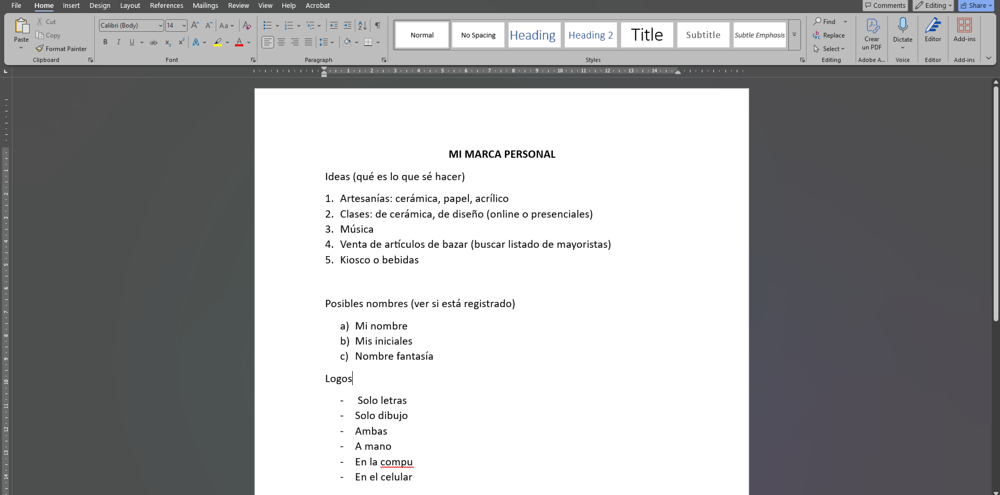

Comunicación / 1UP
¡S.O.S.! No sé por dónde empezar 😱
A todos nos pasó y es un proceso. Pero creeme que se puede.
Te cuento quién soy y te doy 3 ideas para empezar a comunicar lo que hacés de manera sencilla.

¿Quién soy?
Soy Alejandra, de Buenos Aires. Estudié Publicidad, Diseño Gráfico y Marketing. También incursioné en UX/UI y en algo de programación. Trabajé para organizaciones y empresas, y en el último tiempo me metí de lleno en un proyecto para emprendedores, en donde descubrí que yo también podía serlo, y también ayudarlos desde mi experiencia.
Este también es un emprendimiento que me llevó meses desarrollar y lo sigo haciendo. Desde el nombre de la marca, el logo, su posterior registro, la web, los contenidos, los canales de difusión, etc.
Y si tenés una idea pero aún no te animás a llevarla a cabo, te dejo 3 ideas para empezar.
1. Lluvia de ideas
Tomá un papel y una lapicera y escribí todas las idea que tengas en mente (o en la compu o celu si ya no te acordás cómo se escribe). Desde lo más insólito hasta lo más obvio. No hay respuestas equivocadas, solo ideas que pueden evolucionar.
Tal vez todavía no sepas bien a qué te querés dedicar, en ese caso podés poner hacer dos columnas y poner lo que te gustaría hacer y a lo que NO QUERÉS DEDICARTE (porque no te gusta, falta de insumos, logísitica o lo que sea). Por ejemplo, yo nunca podría haberme dedicado a vender artesanías porque no soy buena con las manualidades pero sí en el área digital.
2. Filtro e investigación
Una vez que tenés esa lista de ideas, filtralas por viabilidad, interés y alineación con lo que sos. Investigá sobre el mercado, si hay competencia y tus potenciales clientes para validar tus conceptos.
3. Definí un nombre para tu marca
Si ya te decidiste por una idea, es momento de darle un nombre que refleje lo que ofrecés y que sea fácil de recordar. No es un proceso fácil y rápido, sino sería muy fácil vender.
Volver a todos los artículos ←